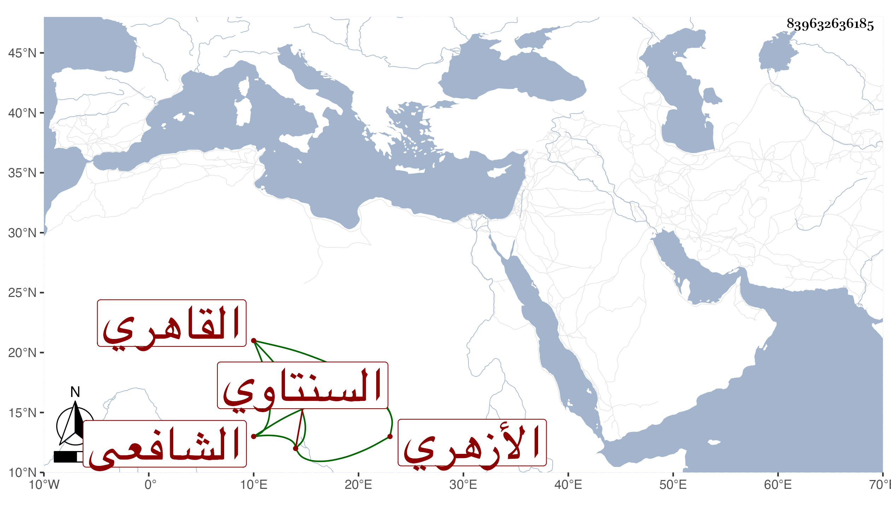

0902Sakhawi.DawLamic.ITO20230111-ara1.EIS1600.839632636185
Biography ID: 839632636185
1221
يوسف بن علي بن عبيد السنتاوي ثم القاهري الأزهري الشافعي . ممن حفظ القرآن وغيره واشتغل على الزواوي وزكريا وآخرين ، بل رافق الثاني في السماع على شيخنا ، وكذا سمع ختم البخاري بالظاهرية وكان خيرا لونا واحدا ممن حج وأم بالأقبغاوية وتنزل في سعيد السعداء وتجرع فاقة سيما بعد انقطاعه وتوالى ضعفه وابتلائه في بدنه بل كف ولم ينفعه صاحبه بشيء يذكر في أيام قضائه. ومات ظنا في سنة خمس وتسعين عن بضع وسبعين .
